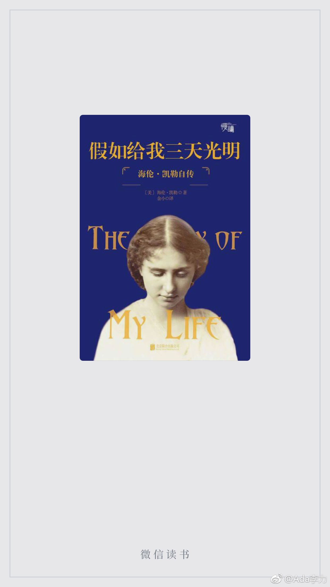

#读书# 应该是在中学时期读完海伦凯勒的《假如给我三天光明》这本书的，然而并没有，只是读过片段。现在读起这本书的契机已忘了，很庆幸读了。
之前我一直不解沙利文老师把全身心和一辈子时间都奉献给又聋又哑的海伦，如果她把同样的精力和时间花在自己身上，应该也有不小的成就吧，比如成为像海伦一样的作家。
现在觉得自己确实狭隘了，老师这个职业就是以学生的成就作为自己最大的作品。而且，海伦这么丰富美好的灵魂，通达的思想，已经能说明好老师带来的重要作用。
海伦为给老师积攒养老金，而跟着马戏团巡演四年，这个情节震惊到我了，更震惊的是海伦的态度，她认为跟马戏团演出与她受邀做演讲性质一样，都是为了合法合理地获取收入。而且，海伦还很享受演出中跟观众那种很接地气的互动。
确实是在经典书中能看到更多的美好，当对现实有些厌倦和失望时，书籍是避风港，也是吸取力量的源泉。
之前我一直不解沙利文老师把全身心和一辈子时间都奉献给又聋又哑的海伦，如果她把同样的精力和时间花在自己身上，应该也有不小的成就吧，比如成为像海伦一样的作家。
现在觉得自己确实狭隘了，老师这个职业就是以学生的成就作为自己最大的作品。而且，海伦这么丰富美好的灵魂，通达的思想，已经能说明好老师带来的重要作用。
海伦为给老师积攒养老金，而跟着马戏团巡演四年，这个情节震惊到我了，更震惊的是海伦的态度，她认为跟马戏团演出与她受邀做演讲性质一样，都是为了合法合理地获取收入。而且，海伦还很享受演出中跟观众那种很接地气的互动。
确实是在经典书中能看到更多的美好，当对现实有些厌倦和失望时，书籍是避风港，也是吸取力量的源泉。
- 